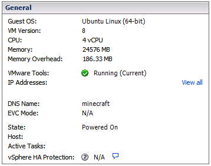

This page will serve as a living document detailing the current setup and configuration of the Fairfield County Minecraft server. We will do our best to keep this document updated as changes are implemented. If you are using this page as a guide for implementing a Minecraft server in your library, please be aware that this is not a step-by-step HOWTO for setting up and maintaining a server, rather, basic documentation of what we are doing. Hopefully this page will give you ideas and spark your imagination. Every server is different and has its own personality. You should do some thinking about the type of server you want to run. Once you have a general sense of what you want to accomplish, then you can start building and hunting for the appropriate plugins (provided you are running a Bukkit server).
Take it slow, one step at a time, and you will not get overwhelmed. There is a lot involved with running a Minecraft server and the most successful ones are those where the staff is engaged, active, and constantly improving. Focus on quality of your server over quantity of plugins. Be patient, fastidious, and embrace your OCD.
Minecraft servers are typically very resource-intensive. What you will need depends on how large your server is, number of worlds, number of players, and number and type of plugins installed. It will gobble up as much memory as you feed it, however that may not necessarily mean that it needs as much memory as you're allocating.
The FCMC server is a virtual server hosted at Darien Library's datacenter. The datacenter is running VMWare ESXi 5.1. Minecraft servers can be run on Windows, Mac, or Linux. We chose Ubuntu Linux for its stability, reliability, and flexibility. To get a sense of what we are allocating for FCMC:
In addition to thinking about memory and CPU capacity, you'll want to think about disk storage for both the live server as well as backups. FCMC is backed-up nightly to a SAN device. Because map files can grow quite large, we have allocated 1TB of disk space to the entire operation. We maintain a full month's worth of backup, however, so it is not necessary for every environment to allocate resources at the same level, depending on your backup strategy.
When we initially started out, FCMC was running Craftbukkit. Craftbukit is a fork of the vanilla Minecraft server--the official server software provided by Mojang. The vanilla server is fine for quickly putting up an environment for players to build cooperative, but Craftbukkit added major extensibility to the server, allowing developers to create plugins that can dramatically alter the gameplay experience.
After running Crafbukkit for awhile, we decided to switch to SpigotMC, a fork of Craftbukkit (essentially, a fork of a fork). Spigot focuses on streamlining the server code to make it faster and more efficient, but is otherwise completely compatible with existing bukkit plugins.
We are also using the Mark2 server wrapper. Mark2 is a great tool for launching and controlling the actual SpigotMC software. It allows admins to control the server from the command line, which is very useful for a variety of administrative tasks like nightly backups and relaunching via crontab.
As the FCMC server evolved, we've had to create some custom software and tailor-made scripts for its maintenance. Some of these scripts are used to provide real-time data to external applications (such as this web site) and some are used on the server to facilitate log rotation, backups, etc. We will be looking at all those resources to make sure they don't include anything sensitive and will make them all available on the FCMC Github repository.
Craftbukkit allows administrators to install plugins that can add fun, exciting, and sometimes useful features to the server. There are thousands of plugins to choose from, however, finding the right ones for your environment will take quite a bit of time and research. Again, it really helps to know what kind of server you want to run because you'll be tempted to install a whole bunch of plugins that may provide little value while de-stabilizing your server.
The most important thing to remember is that if you install a plugin, you're going to have to support it. That means that when a major update comes out o Minecraft, you'll want to be reasonably sure that it will continue to work. If not, you'll want to know that the plugin is actively maintained and will be updated soon. One of the most tedious tasks of running a minecraft server is keeping everything up-to-date and the more plugins you have, the more you'll have to keep track of.
If you're curious about the plugins running on FCMC, we maintain a list here. During your research, you'll discover that some plugins are ubiquitous, such as the essential "Essentials" plugin. Others address verey specific and unique needs. This list is provided for your information only and should not be considered to be an endorsement of these particular plugins.